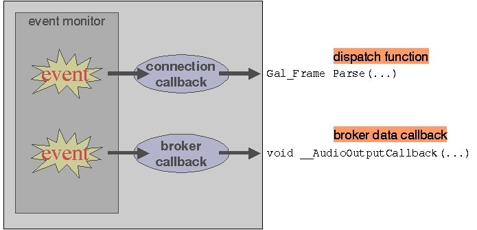
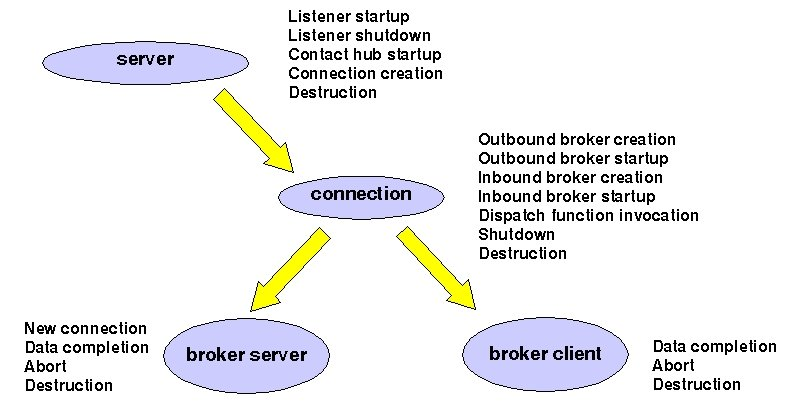
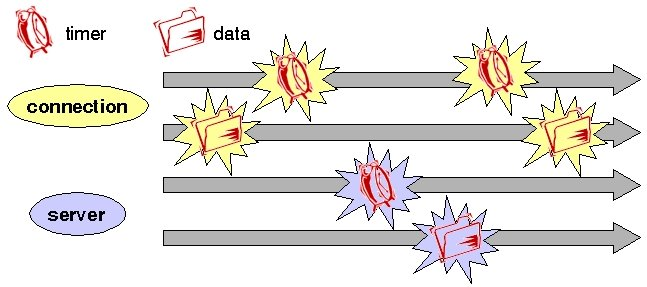
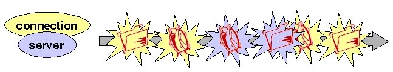
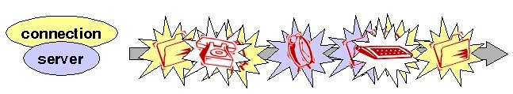
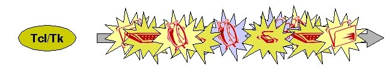

| License / Documentation home / Help and feedback |
Up to this point, we haven't talked much about the engineering model behind the Galaxy Communicator infrastructure, and we haven't needed to. However, in order to learn how to integrate UI elements into a Communicator-compliant system, it's important to understand how things happen in the infrastructure, and how to control how things happen. This lesson is more about computer science than anything else, and we won't look at any code; but at its end, you should understand enough about how the Communicator infrastructure works to integrate a UI aspects into a Communicator-compliant server.
For each type of object in the Galaxy Communicator object model, there's a corresponding callback. The server object can establish a new connection when it has a request to do so; the connection object can invoke a dispatch function when it has message data; the outbound broker can feed data to its connected clients; and the inbound broker can read typed data when it's available.
So we can see now that the data callbacks for the broker clients we learned about in the last lesson are actually part of this larger model. They're not exactly the low-level data callbacks we're talking about here, since the data has been read and digested long before the broker callback sees it; rather, it's one of a set of higher-level callbacks based on what we'll call logical events that the Galaxy Communicator infrastructure supports. In general, it's these logical events which are visible to the average developer, rather than the lower-level data and timer events. Not surprisingly, dispatch functions also count as a type of logical callback:

There are a number of other logical events which the various objects support,
some of which are a direct result of communications events (for instance,
when a server creates a new connection object), and some of which are under
programmer control (for instance, when an outbound or inbound broker is created).
The full set of logical events can be shown as follows:

The programmer can associate callbacks with any of these logical events; in fact, we saw a brief example of this behavior when our target server associated a data completion callback with its broker client.
The power of the event-driven programming model is embodied in its extremely conservative assumptions about ordering and scheduling. Because events can occur randomly, the appropriate behavior in response to any event must be carefully encapsulated. This means that the resulting system is maximally embeddable in other software, because all the required behavior is completely separate from the scheduling and flow of control.
In other words, the event monitor is the least important dimension of the model; you can replace it with another event monitor without any sacrifice in functionality. In fact, we provide an example in the distribution which substitutes a different event monitor for the default Galaxy Communicator event monitor. Furthermore, the Python and Allegro Common Lisp programming language bindings use their own event monitors, but invoke the same underlying C callbacks as the default C implementation. So even before we look at UI programming, we can derive some significant benefits from this model.
In the abstract, a system like this has a number of parallel threads of execution going on. Some of these events are events which happen at particular intervals, and others are events which happen when data is available on a particular communications channel. These threads are conceptually separate. You could think of a callback which is fired every 10 milliseconds as one which is governed by an infinite loop which fires the callback, sleeps for 10 milliseconds, and repeats. Similarly, you could think of each data callback as governed by an infinite loop which constantly tries to read data from the communications channel, and succeeds only when data is available (a so-called blocking read).

In a multithreaded programming situation, this is exactly what happens. Each logical monitor is assigned to a programming thread. Examples of this are when a Communicator C server is run in threaded mode (which we won't talk about in this tutorial), or in the Java or Allegro Common Lisp programming language bindings. In these latter cases, the threaded model is the conceptually natural model for the language.
If you don't use threads (and the default C server doesn't), life is a little more complicated. Since you can only have one infinite loop, these conceptually independent threads of execution have to be collapsed into one:


However, the reason this is simple to do is that monitoring standard input, or an audio device, usually doesn't come with its own main loop. There are many other common tools, such as CORBA and windowing systems, which have their own main loop. For instance, you'd encounter this problem if you wanted to build a Communicator-compliant Motif or Tcl/Tk server:
Fortunately, almost all of these main loops are well-designed, in that they support the ability to add and remove timer and data event callbacks. And since we know that Galaxy Communicator is designed so that all the work is done in the callbacks, and we have no idea whether the same is true for these other systems, the appropriate thing to do is to toss out the Galaxy Communicator main loop and monitor all the appropriate events in the other main loop:

For external main loops implemented in C, there's a well-defined way of doing this embedding of the Galaxy Communicator callbacks, called external loop records. The example in the distribution which substitutes a different main loop for the Galaxy Communicator main loop shows how this mechanism works.
This brings us to the end of our discussion of the structure of servers. We still have three more lessons to go. These lessons will address more details in the Hub which will finally allow you to assemble an entire end-to-end system.
Next: Setting up the Hub to log your interactions
| License / Documentation home / Help and feedback |